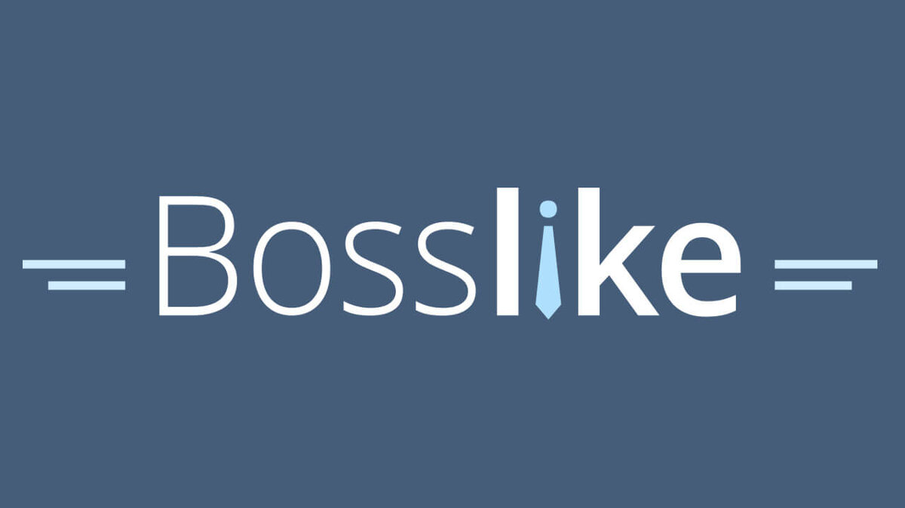

Bosslike:
Рейтинг сервиса:
Платформа Bosslike предлагает услуги по увеличению числа подписчиков в Telegram, что способствует повышению популярности и охвата вашего канала. Сервис работает по принципу взаимного обмена: вы выполняете задания других пользователей, зарабатываете баллы и тратите их на продвижение своего канала. Также доступна возможность приобретения баллов за деньги для ускорения процесса.
Стоимость услуг:
- Подписчики в Telegram: 60 рублей за 100 подписчиков.
Бесплатный тариф: не предусмотрен.
Сроки выполнения: зависят от количества заказанных подписчиков и активности пользователей на платформе; обычно процесс занимает от нескольких часов до нескольких дней.
Преимущества сервиса:
- Возможность бесплатного продвижения через выполнение заданий.
- Простой и интуитивно понятный интерфейс для создания и управления заданиями.
- Гибкость в выборе методов продвижения: бесплатный или платный.
- Поддержка различных социальных сетей, помимо Telegram.
- Возможность быстрого увеличения аудитории канала.
Недостатки сервиса:
- Риск привлечения неактивных или нецелевых подписчиков. :contentReference
- Необходимость тратить личное время на выполнение заданий для бесплатного продвижения.
SMMPrime:
Рейтинг сервиса: 4,8 из 5 на основе 268 отзывов.
Сервис SMMPrime предлагает услуги по накрутке подписчиков для Telegram-каналов, способствуя быстрому увеличению аудитории и повышению популярности вашего контента. Платформа предоставляет различные инструменты для продвижения, включая накрутку живых подписчиков, просмотров и реакций.
Стоимость услуг:
- Подписчики в Telegram: от 0,09 рубля за подписчика.
- Просмотры на посты: от 0,004 рубля за просмотр.
- Реакции на посты: от 0,012 рубля за реакцию.
Бесплатный тариф: не предусмотрен.
Сроки выполнения: зависят от выбранной услуги и объема заказа; обычно процесс запускается в течение нескольких минут после оплаты.
Преимущества сервиса:
- Широкий выбор услуг для продвижения в различных социальных сетях.
- Гибкая система тарифов, позволяющая подобрать оптимальный вариант под любой бюджет.
- Быстрое выполнение заказов и оперативная поддержка клиентов.
- Возможность оплаты различными способами, включая банковские карты и электронные кошельки.
- Гарантия результата: бесплатная докрутка в случае отписок в течение 30 дней.
Недостатки сервиса:
- Отсутствие тестового периода для новых пользователей.
- Возможность привлечения неактивных или нецелевых подписчиков при использовании некоторых услуг.
Простоспец.рф:
Рейтинг сервиса: 3,5 из 5 на основе 99 отзывов.
Сервис Простоспец.рф предоставляет услуги по накрутке подписчиков для Telegram-каналов, помогая увеличить аудиторию и повысить популярность вашего контента. Платформа работает более чем с 20 социальными сетями, включая не только популярные ВКонтакте и Instagram, но и такие площадки, как Twitch, Shazam и Vimeo. В зависимости от выбранной услуги предоставляется гарантия от списаний и блокировок на 1 или 3 месяца.
Стоимость услуг:
- Подписчики в Telegram: от 0,15 рубля за подписчика.
- Просмотры на посты: от 0,05 рубля за просмотр.
- Реакции на посты: от 0,02 рубля за реакцию.
Тестовый период: не предусмотрен.
Сроки выполнения: зависят от выбранной услуги и объема заказа; обычно процесс запускается в течение нескольких часов после оплаты.
Преимущества сервиса:
- Широкий выбор услуг для продвижения в более чем 20 социальных сетях.
- Гибкая система тарифов, позволяющая подобрать оптимальный вариант под любой бюджет.
- Предоставление гарантии от списаний и блокировок на 1 или 3 месяца в зависимости от выбранной услуги.
- Возможность выбора качества аудитории с учетом критериев, таких как город и пол.
- Использование собственного программного обеспечения и базы специалистов без привлечения посредников.
- Разнообразие способов оплаты, включая электронные кошельки, банковские переводы и оплату через терминалы.
- Положительные отзывы пользователей о быстром и качественном выполнении заказов.
- Удобный интерфейс и простота использования платформы.
Недостатки сервиса:
- Отсутствие тестового периода для новых пользователей.
- Возможность привлечения неактивных или нецелевых подписчиков при использовании некоторых услуг.
TapLike:
Рейтинг сервиса: 3,9 из 5 на основе 263 отзывов.
Сервис TapLike предлагает услуги по накрутке подписчиков для Telegram-каналов, обеспечивая быстрое увеличение аудитории и повышение популярности вашего контента. Платформа предоставляет различные инструменты для продвижения, включая накрутку живых подписчиков, просмотров и реакций.
Рейтинг сервиса: 3,9 из 5 на основе 263 отзывов.
Стоимость услуг:
- Подписчики в Telegram: от 0,49 рубля за подписчика.
- Просмотры на посты: от 0,004 рубля за просмотр.
- Реакции на посты: от 0,012 рубля за реакцию.
Бесплатный тариф: не предусмотрен.
Сроки выполнения: зависят от выбранной услуги и объема заказа; обычно процесс запускается в течение нескольких минут после оплаты. :contentReference[oaicite:4]{index=4}
Преимущества сервиса:
- Широкий выбор услуг для продвижения в различных социальных сетях.
- Гибкая система тарифов, позволяющая подобрать оптимальный вариант под любой бюджет.
- Быстрое выполнение заказов и оперативная поддержка клиентов.
- Возможность оплаты различными способами, включая банковские карты и электронные кошельки.
- Гарантия результата: возврат денег в случае отмены заказа.
- Высокий рейтинг и положительные отзывы от пользователей.
- Удобный интерфейс и простота использования платформы.
- Поддержка множества социальных сетей, помимо Telegram.
Недостатки сервиса:
- Отсутствие бесплатного тарифа для новых пользователей.
- Возможность привлечения неактивных или нецелевых подписчиков при использовании некоторых услуг.